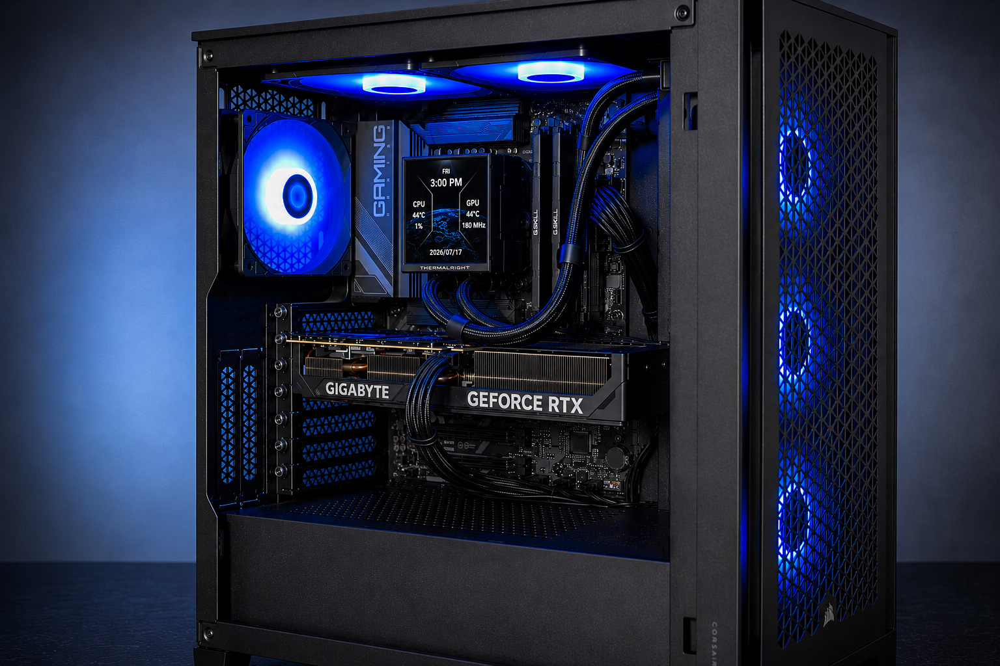

Windows setup
Operating-system installation or configuration when included in the project and the required licensing is available.
New-PC configuration
I can configure Windows, core drivers, updates, and basic new-PC readiness when those tasks are included in the service scope. A valid Windows license must be available when activation is required.
Scope
Operating-system installation or configuration when included in the project and the required licensing is available.
Installation of relevant motherboard, graphics, network, audio, and other core device drivers.
Basic BIOS checks relevant to hardware detection, storage, memory, cooling behavior, and the approved setup.
Windows update review, hardware detection, and basic system-readiness checks for the agreed configuration.
Hardware and setup checks
The build process can include BIOS review, storage detection, Windows setup, driver installation, fan and RGB verification, and basic stability checks when those items are part of the project. The service scope is confirmed before work moves forward.
See how the process works
Process
Describe the PC, current state, and setup you need.
I review hardware, licensing availability, and the setup scope.
Expected work and pricing are confirmed.
I complete the approved Windows, driver, BIOS, and update work.
Relevant detection, driver, storage, fan, and readiness checks follow.
I explain the completed configuration and applicable next steps.
Pricing context
Final pricing depends on the current system, the requested configuration, troubleshooting required, and service scope.
Review current pricingQuestions
A valid Windows license must be available when activation is required.
Yes. Core driver installation and basic BIOS review are available when included in the setup scope.
Local service
I serve Chesterland and the nearby Geauga County and Greater Cleveland communities already listed by JJ's Custom PCs.